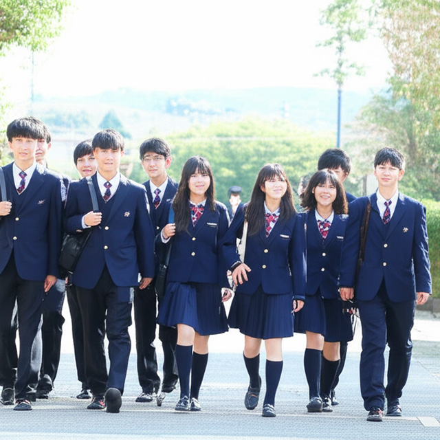
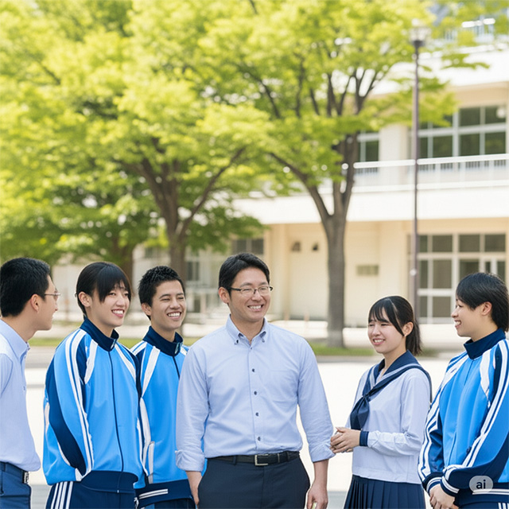
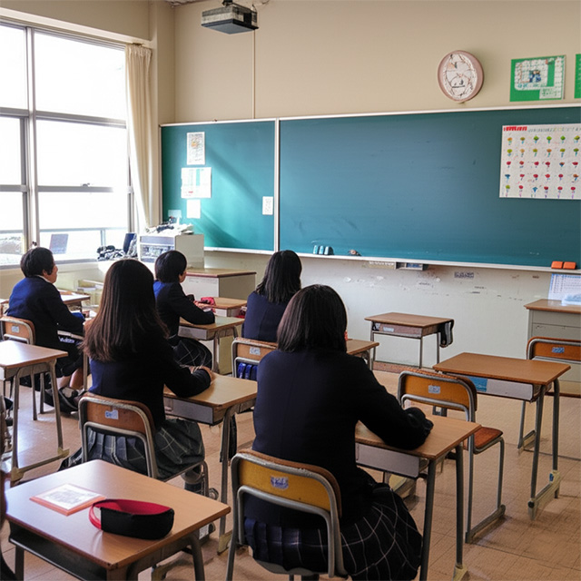
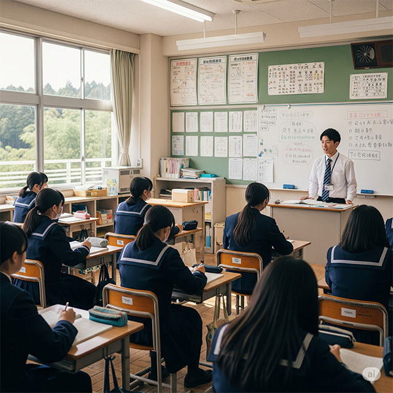
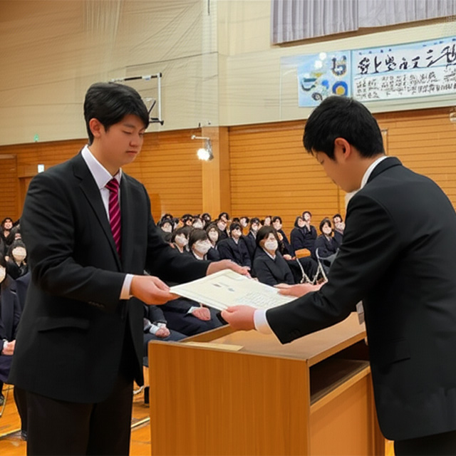

少人数制
１クラス１５名程度の少人数制です。アットホームな雰囲気で、生徒一人ひとりへのフォローを大切にしています。
３年間で高卒資格
レポート、スクーリング、単位認定試験をクリアすることで、３年間で高卒の資格が取得できます。

通信制でも５日制
川越東武学館は週５日制です。でも、入学当初は週１日からでもいいんです。卒業の頃にはしっかりと登校できるようになりましょう。

のんびりスタート
学館には、不登校経験のある生徒がたくさん在籍しています。初めは無理せずに、少しずつ新しい生活に慣れていきましょう。

勉強嫌いも大丈夫
授業は小・中学校の復習から始まります。ゆっくり丁寧に授業は進んでいきます。
レポート対策
高卒資格を取得するためには、レポートの提出が必要です。授業中、教員に教わりながらレポートを書くので、心配は無用です。

スクーリングは年２回
６月と１月に、スクーリングが行われます。それぞれ５日間程度です。ちゃんと出席して、課題を提出すれば、簡単にクリアできます。
定期試験も年２回
定期試験は、７月と２月に行われます。試験の１週間前は、主に定期試験対策の授業が行われます。

卒業率ほほ100％
過去５年間、ほぼ100％の生徒が卒業しています。温かくきめ細やかなサポートで、卒業の日まで生徒を見守ります。